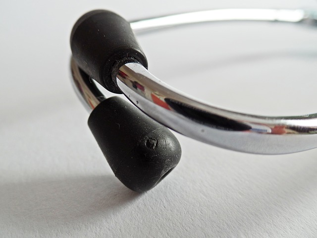

Normal Physical Exam Findings
Physical Examination:
General: The patient is alert and oriented and in no apparent distress
HEENT: Pupils are equal and reactive. EOMI. Nasal mucosa not inflamed. Oropharynx non-erythematous and without exudate.
Neck: Supple without lymphadenopathy. Thyroid non-palpable.
Heart: Regular rate and rhythm, no murmurs, rubs, or gallups.
Lungs: Clear to auscultation bilaterally. No wheezes, rales, or rhonchi.
Abdomen: Soft, nontender, nondistended. Positive bowel sounds. Bruits absent.
Extremities: Warm and well-perfused. No cyanosis, clubbing or edema.
Neuro: Grossly nonfocal.
Skin: No lesions or rashes
Designed to be consistent with many normal findings in physical exam documentation as might be seen in EHR systems such as Epic, Practice Fusion, eClinicalWorks, NextGen Healthcare, and Cerner.
